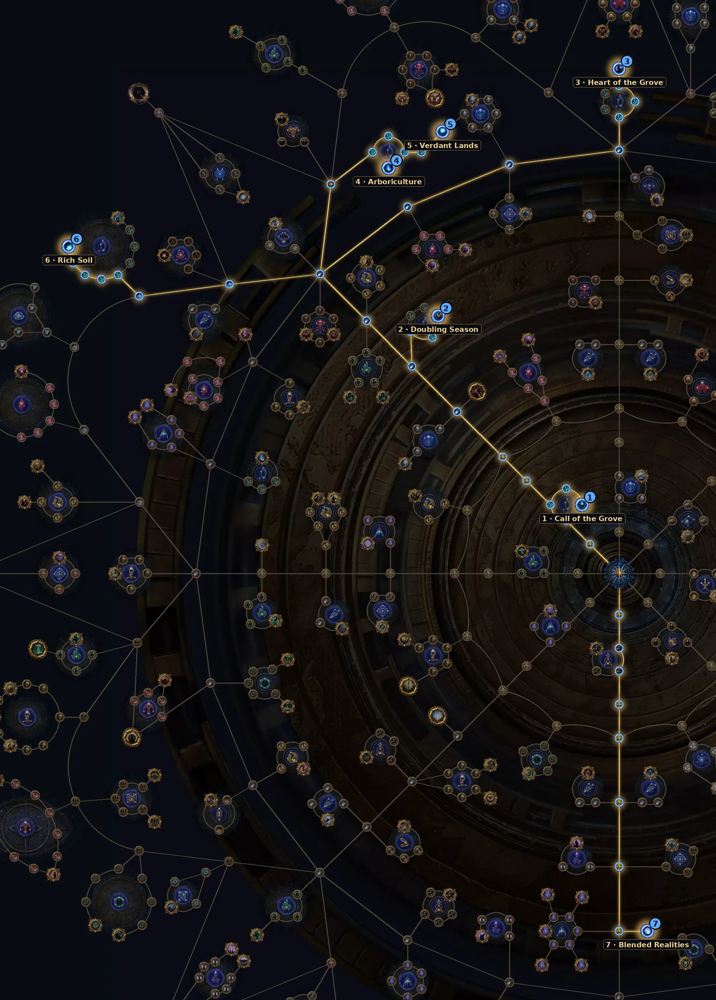

Na 3.30 o Harvest saiu da área separada e vem direto para o mapa. Rende Lifeforce para crafts (ou para vender) e, nos mapas altos, um boss de Harvest.
| Item | Como usar |
|---|---|
| Lifeforce | Cai em pilhas maiores: menos coisa para pegar, mesma quantidade no total. |
| Crafts mais baratos | Trocar o tipo de resistência agora custa 300 de dois tipos de Lifeforce. |
| Horticrafting | A estação de crafting é liberada na primeira vez que você completa uma Sacred Flora. |
| Atlas Drops | Aumenta a Lifeforce que cai. |
Árvore oficial da 3.30 (a GGG publicou antes da liga). Caminho a partir do centro: 26 pontos para os essenciais e +18 para os extras. A árvore tem 150 pontos no total. Some com a base de sustento (36 pontos).
| Nó | O que faz |
|---|---|
| 1 Call of the Grove Essencial | +40% de chance de Sacred Flora (Harvest) nos mapas. |
| 2 Doubling Season Essencial | Lifeforce com 15% de chance de duplicar. |
| 3 Heart of the Grove Essencial | A Flora nunca é normal e a Fauna tem +50% de chance de ser boss. |
| 4 Arboriculture Essencial | +100% de chance para um tipo de Sacred Flora. |
| 5 Verdant Lands Extra | A Fauna dá Crops extras iguais à Lifeforce solta (mas com 50% mais vida). |
| 6 Rich Soil Extra | Mods da Sacred Flora com +50% de efeito. |
| 7 Blended Realities Extra | Escolha: Sacred Flora, Tormented Spirit, Imprisoned Monster ou Shrine. |
Abrir no site oficial (árvore do Atlas)
Nós de escolha (Thread, exército, líder etc.) aparecem marcados no link; escolha a opção indicada na tabela ao clicar neles.

Qualquer build com bom clear. Para o boss, precisa de dano de alvo único.
Do site: Trickster Spark, RF Chieftain, Toxic Rain.
Ainda não há vídeo de farm desta mecânica na 3.30.
Ver vídeos da 3.30 no YouTube
Busca pronta pela 3.30. A árvore do Atlas saiu antes da liga; os vídeos de farm da 3.30 começam a aparecer a partir do lançamento (13/11).